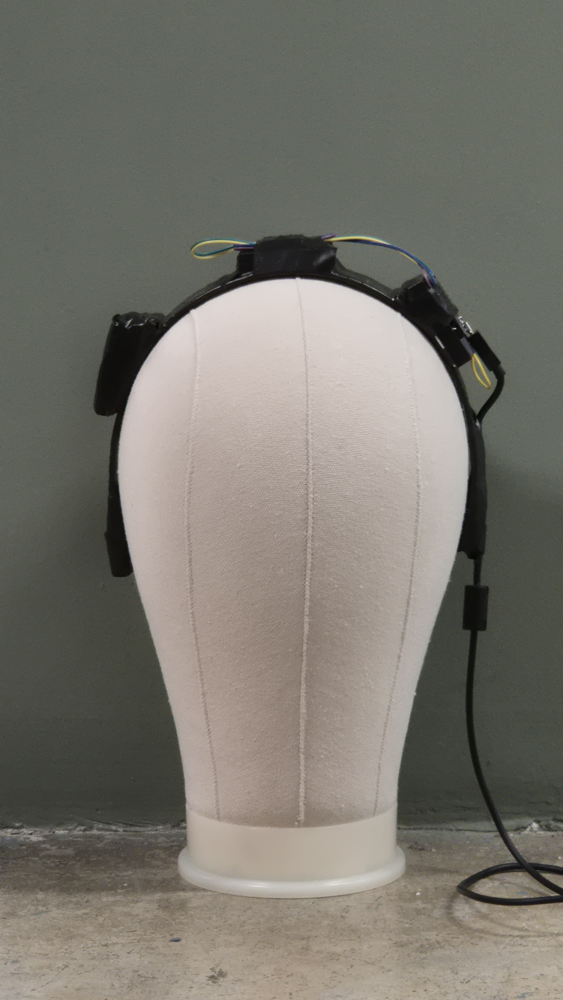

During the "Projetos 1" course, my group used Arduino microcomputers
and sensors to develop the "Ctrl-All", an adaptive control that allows people
with motor disabilities to play educational games such as Kahoot or similar
ones by only tilting their head.